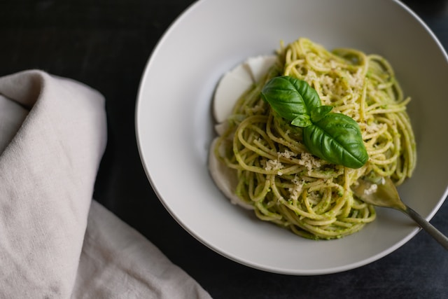

Pasta Pesto

Ingredients
- Pasta of your choice, eg. spaghetti or fusili
- Home-made or storebought pesto, 1 jar
- Frozen creamy spinach, 400 grams
- Two chicken breasts or chicken thighs
- Sun-dried tomatoes (optional)
- Salt and pepper
- Garlic powder, onion powder (optional)
Preparation
- Boil your pasta of choice to the recommended time on the package.
- Dice the chicken in small cubes. Season with salt and pepper.
- Let butter or oil heat up in a frying pan. Once it's nice and hot, add the chicken. Fry until golden-brown.
- Add the jar of pesto to the chicken.
- Stir, then add the frozen creamy spinach. Bring to a low simmer.
- Dice the sun-dried tomatoes. Add them in once the creamy spinach has defrosted and incorporated into the sauce.
- Add the cooked pasta to the pan. Stir, and season to taste with salt, pepper, garlic powder and onion powder.
- Serve. Enjoy!